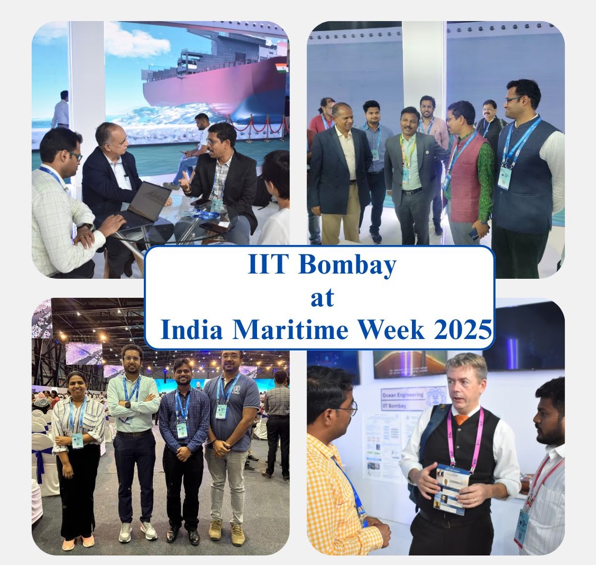
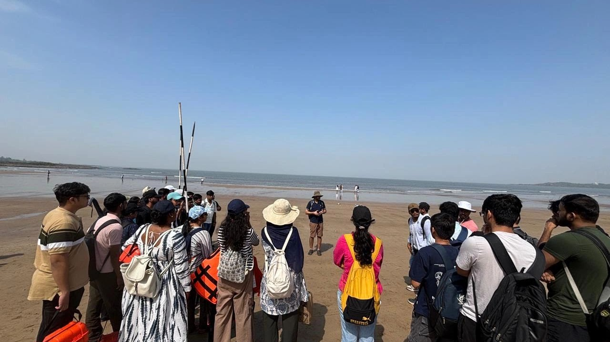

Hi! Welcome to H2O Engineering Group@ IIT Bombay
Here you can find out more about the interesting research we do!
Our Hydro Hazards and Ocean Engineering Group explores a broad range of research topics in Coastal and Ocean Engineering, with an emphasis on natural hazards that impact our communities. We are particularly investigating the hydro- and morpho-dynamics of tsunami, cyclone (storm surge), dam-break and riverine floods. We are also keen to study the benefits of nature-based solutions in protecting our coastal communities from adverse events.
Our researchFluid–sediment–structure dynamics
Our main research interest lies in understanding and solving fluid-sediment-structure dynamics, natural hazards using physical and numerical modelling.


As researchers, we believe that engaging with internal and external collaborators and communicating science are crucial to achieving the end goals of research application and implementation. To this end, we deliver guest lectures, organize workshops for early career researchers and take part in conference activities.
Latest from the group

🌊 IIT Bombay at India Maritime Week 2025 ⚓

🌊🌊 When Aksa beach became our classroom 🌊🌊 This weekend, our enthusiastic undergrad to PhD students participated in a field trip…

As a part of our weekly Ocean Engineering IIT Bombay meetings, we joined online to watch AusYCSEC 2025. It was great to see…

Ananth Wuppukondur
Assistant Professor, Department of Civil Engineering, IIT Bombay, India.
I grew up in Tirupati, a town that is famous for Hindu temples in the Southern Indian state of Andhra Pradesh. I studied there for most of my schooling and then went to Sri Venkateswara University to complete my Bachelor's in Civil Engineering. I then moved to Chennai to obtain a Master's degree in Hydraulic Engineering as well. My enthusiasm to undertake a research career brought me to Australia, where I graduated with a PhD in Coastal and Hydraulic Engineering. I continue to work doing what I like most - research!